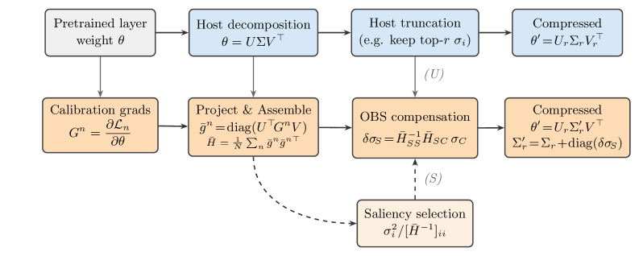

Why it matters왜 중요한가
Low-rank compression is the one family that needs no special hardware: truncating θ = UΣVᵀ turns a matmul into two smaller matmuls, and that is the whole deployment story. Its weakness has always been that it degrades badly when pushed.
저랭크 압축은 특수 하드웨어가 필요 없는 유일한 계열이다: θ = UΣVᵀ를 절단하면 행렬곱 하나가 더 작은 행렬곱 둘이 되고, 배포 이야기는 그것으로 끝이다. 약점은 늘 하나였다 — 세게 밀어붙이면 급격히 무너진다.
The framing here is worth more than the numbers. A decade of second-order pruning — OBD, OBS, Optimal BERT Surgeon, GPTQ, SparseGPT, LLM Surgeon — has been about compensating survivors in weight space, where the Hessian is mn×mn and every scaling trick (layer-wise blocks, K-FAC, input Gram matrices) exists to make that size tractable. Meanwhile the entire SVD-compression literature (FWSVD, DRONE, ASVD, SVD-LLM, OBD-LLM) optimizes the decomposition and then truncates and walks away. This paper notices that the two lines never met, and that in the singular-value basis the size problem simply evaporates: there are only ℓ = min(m, n) parameters per layer, so the exact OBS solution is affordable without any approximation of the curvature structure — only of its values.
숫자보다 이 논문의 배치가 더 값지다. 10년의 2차 프루닝 — OBD, OBS, Optimal BERT Surgeon, GPTQ, SparseGPT, LLM Surgeon — 은 모두 가중치 공간에서 생존자를 보정하는 일이었고, 거기서 헤시안은 mn×mn이라 모든 스케일링 기법(층별 블록, K-FAC, 입력 Gram 행렬)이 그 크기를 감당하려 존재했다. 한편 SVD 압축 문헌 전체(FWSVD, DRONE, ASVD, SVD-LLM, OBD-LLM)는 분해를 최적화한 뒤 절단하고 그냥 떠난다. 이 논문은 두 계보가 만난 적이 없다는 것, 그리고 특이값 기저에서는 크기 문제가 그냥 증발한다는 것을 짚는다: 층당 파라미터가 ℓ = min(m, n)개뿐이라, 곡률의 구조를 근사하지 않고도 — 값만 근사하면 — 정확한 OBS 해를 감당할 수 있다.

By the numbers핵심 숫자
The headline and its counterweight, in one table헤드라인과 그 반대추를 표 하나로
| Model모델 | Method방법 | 0.4 | 0.5 | 0.6 | 0.7 | 0.8 |
|---|---|---|---|---|---|---|
| OPT-6.7B dense 10.86 | SVD-LLM | 15.27 | 21.22 | 53.23 | 944.57 | 6777.57 |
| SVD-Surgeon (U) | 14.25 | 17.02 | 23.76 | 47.27 | 316.47 | |
| SVD-Surgeon (S) | 14.22 | 16.90 | 23.39 | 46.36 | 279.88 | |
| LLaMA-2-7B dense 5.47 | SVD-LLM | 16.15 | 33.28 | 89.97 | 253.40 | 570.44 |
| SVD-Surgeon (U) | 15.71 | 31.49 | 84.04 | 241.71 | 549.14 | |
| SVD-Surgeon (S) | 15.59 | 31.14 | 82.50 | 232.76 | 531.62 |
Three moves that make it work작동하게 만드는 세 수
A fourth-order tensor collapses to an ℓ×ℓ matrix
Keep θ in matrix form and its Hessian is a fourth-order object Hij,kl. But if the only perturbation allowed is δθ = U·diag(δσ)·Vᵀ, the quadratic form contracts over all four indices and leaves δL ≈ ½ δσᵀH̄δσ with H̄pq = Σ U⊤piVjpHij,klU⊤qkVlq. That is the entire reason this is tractable: freezing the singular directions is what shrinks curvature from mn×mn to min(m,n)².
θ를 행렬 형태로 두면 헤시안은 4차 객체 Hij,kl이다. 그러나 허용되는 섭동이 δθ = U·diag(δσ)·Vᵀ뿐이라면 2차 형식이 네 인덱스 모두에 대해 축약되어 δL ≈ ½ δσᵀH̄δσ만 남고, H̄pq = Σ U⊤piVjpHij,klU⊤qkVlq이다. 이것이 다루기 쉬워지는 유일한 이유다: 특이 방향을 고정하는 대가로 곡률이 mn×mn에서 min(m,n)²로 줄어든다.
Second-order curvature from first-order gradients
Approximate the per-layer Hessian by the empirical Fisher, and the contraction simplifies to H̄ = (1/N)Σ ḡⁿḡⁿᵀ with ḡⁿ = diag(UᵀGⁿV). The pleasing part: by the chain rule with ∂θij/∂σp = UipVjp, that quantity is ∂Lₙ/∂σp — a derivative no autodiff framework exposes, obtained here from an ordinary gradient matrix and one matmul. No second derivatives are ever computed.
층별 헤시안을 경험적 Fisher로 근사하면 축약이 H̄ = (1/N)Σ ḡⁿḡⁿᵀ, ḡⁿ = diag(UᵀGⁿV)로 단순해진다. 기분 좋은 대목: ∂θij/∂σp = UipVjp인 연쇄법칙에 의해 이 양은 곧 ∂Lₙ/∂σp다 — 어떤 자동미분 프레임워크도 노출하지 않는 도함수를, 평범한 기울기 행렬과 행렬곱 한 번으로 얻는다. 2차 도함수는 끝내 한 번도 계산되지 않는다.
One solve gives the update; the same algebra gives the saliency
Substituting δσC = −σC and minimizing yields δσ*S = H̄⁻¹SSH̄SCσC. Put that back and the residual loss is the Schur complement ½σCᵀ(H̄CC − H̄CSH̄⁻¹SSH̄SC)σC, which by block inversion equals ½σCᵀ([H̄⁻¹]CC)⁻¹σC — the classical OBS result, recovered without Lagrange multipliers. For a single value it becomes σᵢ²/2[H̄⁻¹]ᵢᵢ, and when H̄ ≈ I it degenerates to σᵢ²/2: plain magnitude selection falls out as the special case.
δσC = −σC를 대입해 최소화하면 δσ*S = H̄⁻¹SSH̄SCσC가 나온다. 이를 되돌려 넣으면 잔여 손실은 Schur 보완 ½σCᵀ(H̄CC − H̄CSH̄⁻¹SSH̄SC)σC이고, 블록 역행렬 항등식에 의해 ½σCᵀ([H̄⁻¹]CC)⁻¹σC와 같다 — 라그랑주 승수 없이 되찾은 고전 OBS 결과다. 단일 값에 대해서는 σᵢ²/2[H̄⁻¹]ᵢᵢ가 되고, H̄ ≈ I이면 σᵢ²/2로 퇴화한다: 평범한 크기 기반 선택이 특수 경우로 떨어져 나온다.
Never assuming orthonormality is the whole composability story
Eq. (3) is written for a general θ = UΣVᵀ, with standard SVD as a special case. This is not a stylistic choice — SVD-LLM's whitening pushes S⁻¹ into the right factor, so its Vᵀ is not orthonormal, and a derivation that leaned on UᵀU = VᵀV = I would not apply to the very host the paper targets. The generality is what lets it sit on top of an existing pipeline instead of replacing it.
식 (3)은 표준 SVD를 특수 경우로 포함하는 일반적 θ = UΣVᵀ로 쓰였다. 이는 문체 선택이 아니다 — SVD-LLM의 whitening은 S⁻¹를 오른쪽 인자로 밀어넣어 그 Vᵀ가 직교가 아니고, UᵀU = VᵀV = I에 기댄 유도는 정작 이 논문이 겨냥한 호스트에 적용되지 않는다. 이 일반성 덕분에 기존 파이프라인을 대체하지 않고 그 위에 앉을 수 있다.
How it works어떻게 작동하나
- Let the host do its job, untouched.호스트가 하던 일을 그대로 하게 둔다. SVD-LLM whitens with a Cholesky factor S of the activation Gram matrix, decomposes θS = UΣṼᵀ, truncates to rank r, and maps back through S⁻¹. Target rank comes from the ratio: ρ = 1 − r(m+n)/mn. SVD-LLM은 활성 Gram 행렬의 Cholesky 인자 S로 whitening하고, θS = UΣṼᵀ로 분해하고, 랭크 r로 절단한 뒤 S⁻¹로 되돌린다. 목표 랭크는 압축률에서 나온다: ρ = 1 − r(m+n)/mn.
- Collect gradients on a separate calibration set.별도 캘리브레이션 집합에서 기울기를 모은다. Drawn from the same source as the host's whitening data but kept distinct, because Hessian estimation needs far more samples than whitening: N = 16,384–32,768 against the host's Ncal = 256. 호스트의 whitening 데이터와 같은 출처에서 뽑되 분리해서 쓴다. 헤시안 추정에는 whitening보다 훨씬 많은 샘플이 필요하기 때문이다: 호스트의 Ncal = 256에 비해 N = 16,384~32,768.
- Project and assemble H̄, then make it invertible.사영하고 H̄를 조립한 뒤, 역행렬이 가능하게 만든다. ḡⁿ = diag(UᵀGⁿV) per sample, outer-producted and averaged. Diagonal damping dS, d is added before inversion, and only the leading r + α(ℓ−r) block is retained, with α = 0.3 fixed everywhere. 샘플마다 ḡⁿ = diag(UᵀGⁿV)를 구해 외적하고 평균 낸다. 역행렬 전에 대각 damping dS, d를 더하고, 선행 r + α(ℓ−r) 블록만 남긴다. α = 0.3은 어디서나 고정.
- Solve once, scale, add.한 번 풀고, 스케일하고, 더한다. δσ*S = H̄⁻¹SSH̄SCσC, multiplied by λ to account for the approximate Hessian, then Σ′r = Σr + diag(δσS). λ = 1 for all OPT models — and 0.1 for LLaMA-2-7B. δσ*S = H̄⁻¹SSH̄SCσC를 구해, 근사 헤시안을 감안한 λ를 곱하고, Σ′r = Σr + diag(δσS). λ는 모든 OPT에서 1이고 — LLaMA-2-7B에서는 0.1이다.
- Optionally re-choose what to prune first (variant S).선택적으로 무엇을 버릴지 먼저 다시 고른다 (S 변형). Rank all triplets by σᵢ²/2[H̄⁻¹]ᵢᵢ, take the lowest as C, then apply the same compensation. This costs a pseudoinverse of the full block-truncated H̄ rather than a single linear solve. 모든 삼중항을 σᵢ²/2[H̄⁻¹]ᵢᵢ로 정렬해 최하위를 C로 잡고, 같은 보정을 적용한다. 선형 시스템 한 번이 아니라 블록 절단된 H̄ 전체의 유사역행렬이 필요하다.
What to take away그래서, 가져갈 것
A corrective layer, not a competitor. The most reusable thing here is the interface: any method producing θ = UΣVᵀ can be post-processed. That makes SVD-Surgeon composable with the stronger hosts it does not test — including OBD-LLM (arXiv:2604.00821), which its own related-work section calls loss-optimal.
경쟁자가 아니라 보정 레이어. 여기서 가장 재사용 가능한 것은 인터페이스다: θ = UΣVᵀ를 내놓는 어떤 방법이든 후처리할 수 있다. 덕분에 SVD-Surgeon은 정작 시험하지 않은 더 강한 호스트들과도 결합 가능하다 — 자기 관련연구 절에서 손실 최적이라 부르는 OBD-LLM(arXiv:2604.00821)을 포함해서.
Choose the basis, and the hard part disappears. Weight-space OBS spends all its ingenuity approximating an mn×mn Hessian. Move to σ-coordinates and the exact block solve is affordable — the cost is paid instead by freezing U and V, which the authors flag as the obvious next thing to relax.
기저를 잘 고르면 어려운 부분이 사라진다. 가중치 공간 OBS는 mn×mn 헤시안을 근사하는 데 모든 재간을 쓴다. σ 좌표로 옮기면 정확한 블록 해가 감당 가능해지고, 그 대가는 U와 V를 얼리는 것으로 치른다 — 저자들도 다음에 풀어야 할 지점으로 명시한다.
Compensation ≫ selection, and that is itself a finding. Nearly all the gain comes from variant (U); re-selecting via the principled saliency adds little. Read the other way, this is quiet evidence that magnitude-based selection in a whitened basis was already close to optimal — the mistake was never which values to drop, but leaving the rest unadjusted.
보정 ≫ 선택이며, 그 자체가 하나의 발견이다. 이득의 거의 전부가 (U) 변형에서 나오고, 원리적인 saliency로 다시 고르는 것은 별로 보태지 않는다. 뒤집어 읽으면, whitening된 기저에서의 크기 기반 선택이 이미 최적에 가까웠다는 조용한 증거다 — 실수는 어떤 값을 버리느냐가 아니라 나머지를 손대지 않고 둔 것이었다.